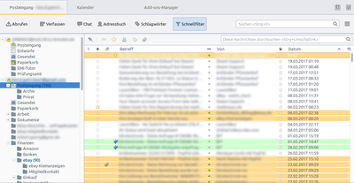

Design
Archivierte Anleitung
Dieser Artikel wurde archiviert, da er - oder Teile daraus - nur noch unter einer älteren Ubuntu-Version nutzbar ist. Diese Anleitung wird vom Wiki-Team weder auf Richtigkeit überprüft noch anderweitig gepflegt. Zusätzlich wurde der Artikel für weitere Änderungen gesperrt.
Zum Verständnis dieses Artikels sind folgende Seiten hilfreich:
Themen¶
Das Aussehen von Thunderbird sowie die Aufteilung der Programmoberfläche lässt sich durch Designs (engl: "themes") anpassen. Die meisten findet man auf der Designs-Seite von Mozilla  .
.
Installation¶
Die Installation soll hier am Beispiel des Designs Tango vollzogen werden.
Zuerst lädt man sich das Design  ins Homeverzeichnis herunter. Die Datei besitzt dann die Endung .jar.
ins Homeverzeichnis herunter. Die Datei besitzt dann die Endung .jar.
Hinweis:
Es ist wichtig, die Datei per  -Klick auf "Install Now" und "Speichern unter" herunterzuladen. Andernfalls würde Firefox versuchen, die Datei direkt zu öffnen bzw. zu installieren, was natürlich nicht funktioniert.
-Klick auf "Install Now" und "Speichern unter" herunterzuladen. Andernfalls würde Firefox versuchen, die Datei direkt zu öffnen bzw. zu installieren, was natürlich nicht funktioniert.
Ist der Downloadvorgang abgeschlossen, öffnet man den Thunderbird Theme-Manager unter "Extras -> Erweiterungen" und klickt auf "Installieren". Jetzt wählt man das heruntergeladene Design aus und klickt auf "Theme benutzen". Alternativ kann man (per drag&drop) den Link ins Theme-Fenster von Thunderbird ziehen. Danach ist ein Neustart von Thunderbird notwendig.
Hintergrundwissen¶
/usr/share/pixmaps oder /usr/share/icons ist der Pfad für alle Starter-Icons
/usr/lib/mozilla-thunderbird/icons ist der Pfad zu den Icons, der von der Anwendung genutzt wird
/usr/lib/mozilla-thunderbird/chrome/icons/default ist der Alternativpfad der Anwendung
Mauszeigerdesign unter KDE¶
Häufig ist es der Fall, dass in Mozillaprogrammen (Firefox, Thunderbird) das Mauszeigerdesign mit dem in KDE nicht übereinstimmt. Die Lösung ist ganz einfach.
Man öffnet einen Editor mit Root-Rechten [1] und fügt folgenden Text ein:
[Icon Theme] Inherits=kubuntu
Die Datei dann unter /usr/share/icons/default/index.theme abspeichern und gegebenenfalls Thunderbird neustarten.
Hintergrundfarbe von Mail-Anhängen¶
Je nach Thunderbird/Ubuntu-Version (z. B. Thunderbird 3 unter Lucid) kann es sein, dass die Markierung von Mail-Anhängen kaum/nicht sichtbar ist (hellgrau auf weiß). Abhilfe schaffen Einträge in der Datei userChrome.css, die im Profil-Verzeichnis im Ordner chrome evtl. neu angelegt werden muss:
.descriptionitem-iconic:hover {
background-color: #C6B8A6 !important;
}
.descriptionitem-iconic[selected="true"] {
background-color: #3C3B37 !important;
color: #FFF !important;
}Dadurch werden nach einem Thunderbird-Neustart Anhänge in der unteren Nachrichten-Leiste beim Übefahren mit der Maus hellgrau hervorgehoben; beim Markieren werden sie mit weißer Schrift auf dunkelgrauem Hintergrund dargestellt.
Thunderbird ohne HTML¶
Um HTML in den Mails nicht mehr zu benutzen, geht man wie folgt vor:
Unter "Einstellungen -> Konten-Einstellungen -> KONTEN-NAME -> Verfassen & Adressieren" die Option "Nachrichten im HTML-Format verfassen" deaktivieren. (Wenn man mehrere Identitäten hat, diese jeweils genauso bearbeiten.)
Wenn man nur an bestimmte Empfänger Reintext-Mails senden will, dann kann man unter "Einstellungen -> Einstellungen -> Verfassen -> Sende-Optionen" bei "Textformat" die Option "Nachrichten in reinen Text konvertieren" aktivieren und dann ...
im gleichen Dialog unter "Reintext-Domains" mit "Hinzufügen" Domains angeben, an die E-Mails immer als Reintext-Mails gesendet werden sollen, oder
im "Adressbuch" einen Kontakt auswähle, mit rechter Maustaste "Kontakt bearbeiten" und "Bevorzugt folgendes Nachrichten-Format: Reintext" einstellen.
Unter "Ansicht -> Nachrichteninhalt" die Option "Reiner Text" auswählen. (Zeigt HTML-Mails als reinen Text an!)
Zitate-Balken entfernen¶
Um die Zitatbalken zu entfernen, muss folgendes gemacht werden:
Im chrome -Ordner des Profilverzeichnisses muss die Datei userContent.css editiert bzw. erstellt werden [1]:
1 2 3 4 5 6 7 8 9 10 11 12 13 14 15 16 17 18 19 20 21 22 23 24 25 26 27 28 29 30 31 32 33 34 35 36 | /* Farben zitierter Nachrichten */ blockquote[type=cite] { color: RGB(0,0,255) !important; background-color: RGB(245,245,245) !important; padding: 0em 0em 0em 0em !important; border-right: none !important; border-left: none !important; } blockquote[type=cite] blockquote { color: teal !important; background-color: RGB(235,235,235) !important; } blockquote[type=cite] blockquote blockquote { color: maroon !important; background-color: RGB(225,225,225) !important; } blockquote[type=cite] blockquote blockquote blockquote { color: purple !important; background-color: RGB(215,215,215) !important; } blockquote[type=cite] blockquote blockquote blockquote blockquote { color: RGB(0,204,0) !important; background-color: RGB(205,205,205) !important; } blockquote[type=cite] blockquote blockquote blockquote blockquote blockquote { color: RGB(238,0,187) !important; background-color: RGB(195,195,195) !important; } blockquote[type=cite] blockquote blockquote blockquote blockquote blockquote blockquote { color: navy !important; background-color: RGB(185,185,185) !important; } blockquote[type=cite] blockquote blockquote blockquote blockquote blockquote blockquote blockquote { color: RGB(0,238,204) !important; background-color: RGB(175,175,175) !important; } |
Zusätzlich sollte in der user.js folgendes drinstehen:
1 2 | user_pref("mail.quoted_graphical", false); user_pref("mailnews.display.disable_format_flowed_support", true); |
Jetzt sind die Zitatbalken weg.
Schriftart und -größe der Oberfläche anpassen¶
Einstellungen für Schriften der Oberfläche (Adressleiste, Tabs, Menüs usw.) werden normalerweise von den Systemeinstellungen übernommen. Allerdings lassen sich diese Einstellungen auch unabhängig vom System den eigenen Bedürfnissen entsprechend anpassen. Dazu wechselt man ins Verzeichnis /home/BENUTZERNAME/.thunderbird/. Dort gibt es ein Verzeichnis, dessen Namen aus einer zufälligen Zeichenfolge mit der Endung .default lautet. Dort hinein wechselt man. Jetzt legt man - falls nicht vorhanden . den Ordner chrome und darin die Datei userChrome.css an. In dieser Datei kann man nun Schriftart und -größe festlegen.
Folgender CSS-Code legt z.B. global für die Oberfläche die Ubuntu-Schriftart mit 12pt Grösse fest:
1 2 3 4 | * { font-family: Ubuntu !important; font-size: 12pt !important; } |
Nach einem Neustart von Thunderbird werden die Änderungen übernommen.
Designs via Stylish Add-On¶
Um das Design von Thunderbird wirklich vollständig zu ändern, eignet sich Stylish . Mit Hilfe dieses Add-Ons können CSS-basierte Themes installiert und erstellt werden. Auf der Webseite userstyles.org kann man viele verschiedene Designs herunterladen. Der integrierte Theme-Editor erlaubt eine Vorschau des Designs.
|  |
| Thunderbird mit Stylish Design 'Chris' Clean Adaption no1' |
- Erstellt mit Inyoka
-
 2004 – 2017 ubuntuusers.de • Einige Rechte vorbehalten
2004 – 2017 ubuntuusers.de • Einige Rechte vorbehalten
Lizenz • Kontakt • Datenschutz • Impressum • Serverstatus -
Serverhousing gespendet von